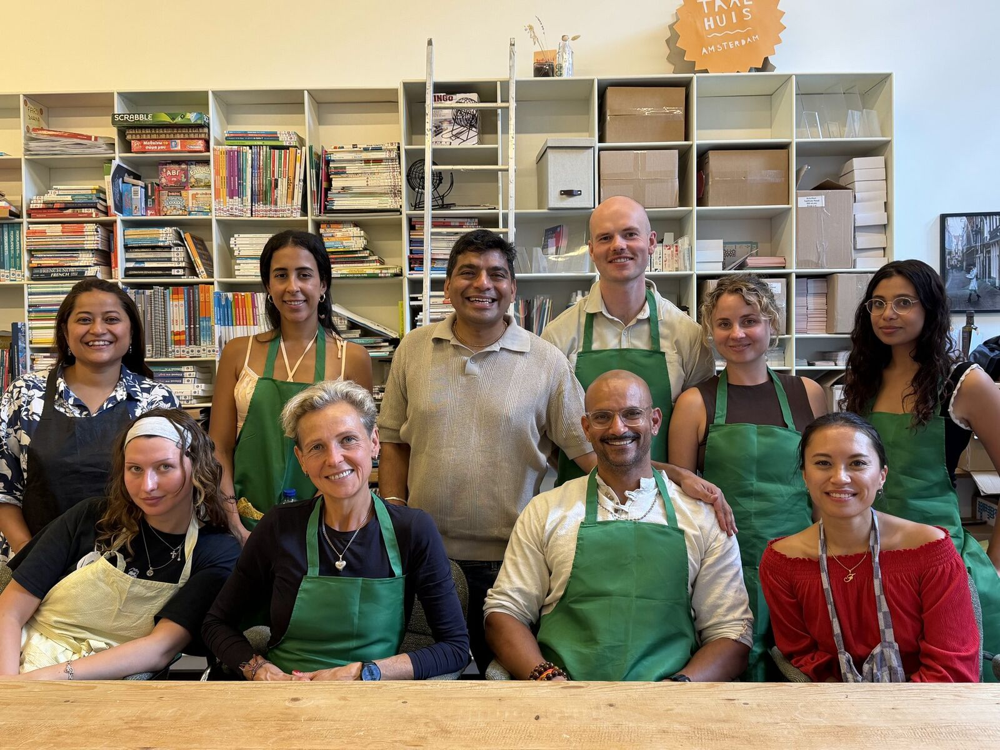
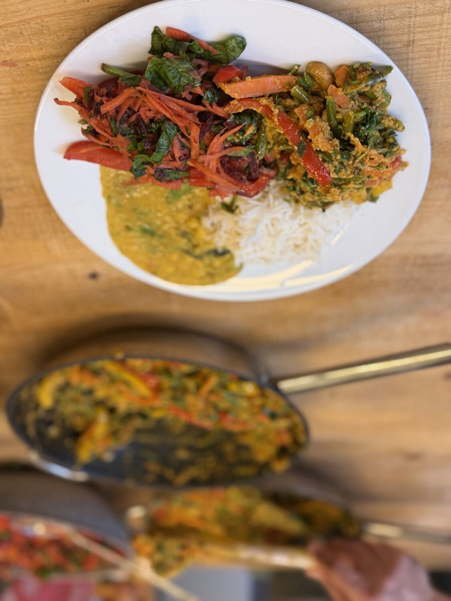
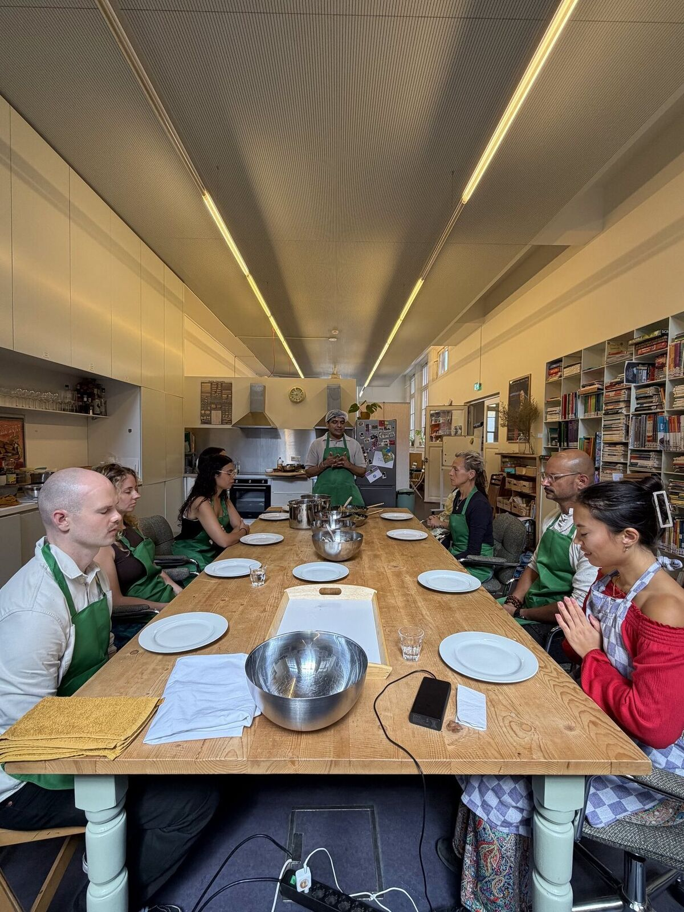
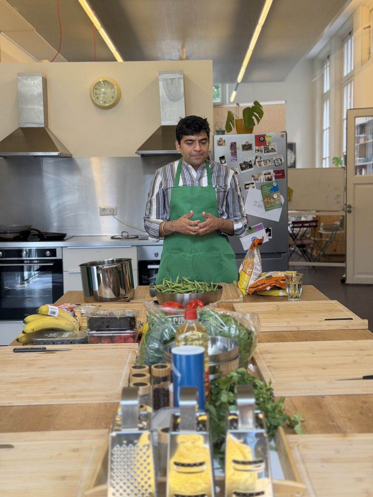
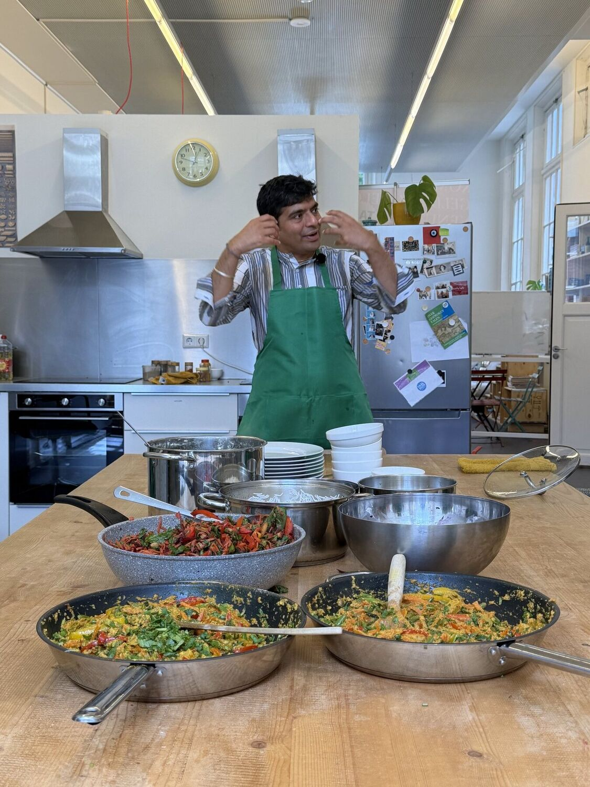
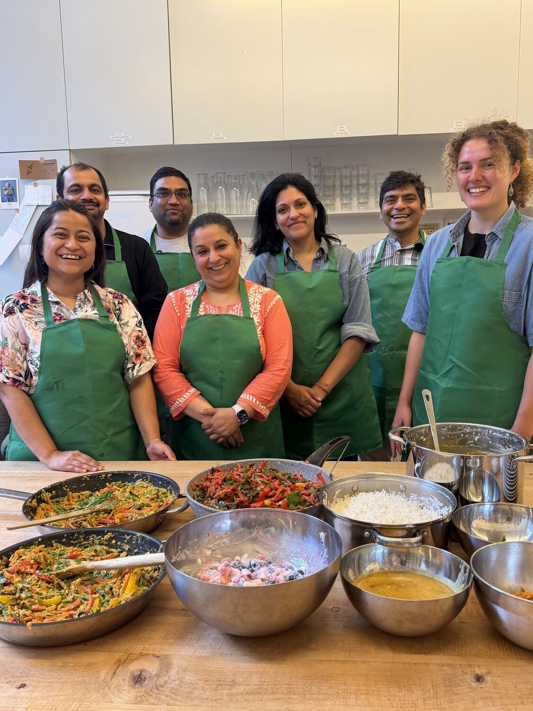
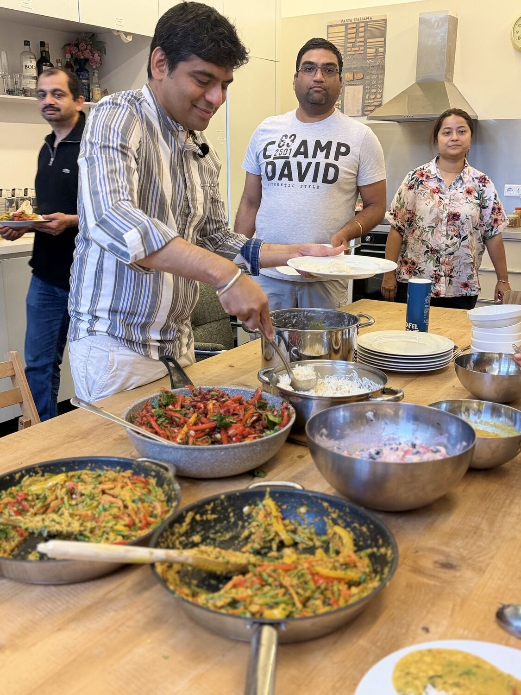

Vegetarian
Plant-forward, colourful and deeply satisfying. We show that vegetarian food can be rich, full of flavour and nutritionally complete, with no compromise.
Hands-on cooking workshops in Amsterdam where wholesome, plant-based sattvic food becomes a practice of presence, nourishment and community.



“Every meal begins with a pause.”The Bhakti Space kitchen
Bhakti means devotion. At Bhakti Space we bring that spirit into the kitchen: every chop, stir and shared meal becomes an act of care for ourselves, for each other and for the earth.
Our workshops are rooted in sattvic principles: food that is fresh, seasonal, gently spiced and prepared with a calm mind. No meat, no fish, no rush. Just good ingredients, honest technique and a table full of people.
Whether you have never held a chef's knife or have cooked for decades, you will leave with new recipes, a lighter mind and new friends around the table.
See what we cookSimple ideas that shape what we cook, how we cook and why we gather.
Plant-forward, colourful and deeply satisfying. We show that vegetarian food can be rich, full of flavour and nutritionally complete, with no compromise.
Fresh, seasonal, light and balanced. Rooted in Ayurvedic tradition, sattvic food supports clarity, steady energy and a calm, contented mind.
Mindful sourcing, low-waste habits and full presence at the stove. We cook slowly, taste with attention and eat with gratitude.
In Ayurveda, sattva is the quality of harmony and clarity. A sattvic meal is simple, fresh and made with love. It nourishes the body without weighing down the mind.
The most important ingredient is the state of mind of the cook. That is why every workshop begins with a moment of stillness.
Four signature workshops, each hands-on and ending with everyone sitting down to share the meal they made together.

01The foundations of a calm, balanced kitchen: khichdi, seasonal sabzi, fresh chutneys and soft rotis.
A slower session that begins in silence. Cook with breath, intention and attention, then eat mindfully together.

03Discover how turmeric, cumin, fennel, ginger and hing heal and delight. Blend your own masala to take home.

04A celebratory multi-course vegetarian meal built on the season's harvest. Ideal for friends, families and teams.
From the first cup of tea to the last bite, every workshop follows a gentle rhythm.
 1
1Apron on, station ready. Settle in with a cup of herbal tea.
A moment of stillness, then an introduction to the menu.
Chop, stir and season side by side, guided by our hosts.

4Sit down, give thanks and enjoy the meal you created.
Green aprons, warm kitchens and plenty of laughter. Click any photo to enlarge.
Sample reviews shown for layout. Replace them with your real guest feedback.
Places are limited to keep each workshop intimate. Dates below are examples; update them to your real calendar.
Not at all. Our workshops welcome complete beginners as well as seasoned home cooks. You will work in small teams and our hosts guide every step.
Sattvic cooking comes from the yogic and Ayurvedic traditions. It favours fresh, seasonal, vegetarian ingredients, gentle spices and a calm, grateful state of mind while cooking. The result is food that feels light, nourishing and balancing.
All workshops are fully vegetarian. Vegan and allergy adaptations are available on request; just mention them in your booking message.
Just yourself and an appetite. Aprons, ingredients, tools and recipes are all provided. Many guests bring a small container to take home leftovers.
Yes. We regularly host birthdays, friend groups and corporate team offsites. Choose “Private group or team workshop” in the form below and tell us your preferred date and group size.
Reserve your seat, ask a question or plan a private workshop for your group. We reply within two days.